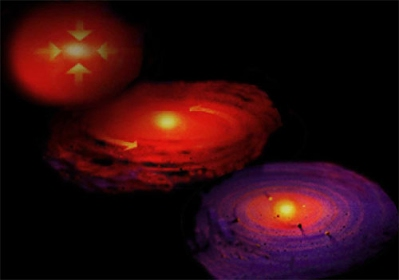
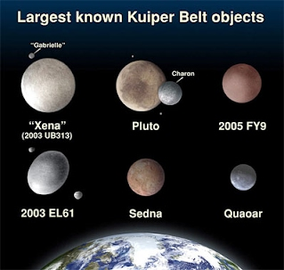

ระบบสุริยะเกิดจากกลุ่มฝุ่นและแก๊สในอวกาศซึ่งเรียกว่า “โซลาร์เนบิวลา” รวมตัวกันเมื่อประมาณ 4,600 ล้านปีมาแล้ว เมื่อสสารมากขึ้นแรงโน้มถ่วงระหว่างมวลสารมากขึ้นตามไปด้วย กลุ่มฝุ่นและแก๊สยุบตัวหมุนเป็นรูปจานตามหลักอนุรักษ์โมเมนตัมเชิงมุม แรงโน้มถ่วงที่เพิ่มขึ้นสร้างแรงกดดันที่ใจกลางจนอุณหภูมิสูงถึง 15 ล้านเคลวิน จุดปฏิกิริยานิวเคลียร์ฟิวชัน หลอมรวมอะตอมของไฮโดรเจนให้เป็นฮีเลียม ดวงอาทิตย์กำเนิดเป็นดาวฤกษ์
วัสดุรอบๆ ดวงอาทิตย์ ยังคงหมุนวนและโคจรรอบดวงอาทิตย์ด้วยโมเมนตัมที่มีอยู่เดิม มวลสารในวงโคจรแต่ละชั้นรวมตัวกันเป็นดาวเคราะห์ อิทธิพลจากแรงโน้มถ่วงทำให้วัสดุที่อยู่รอบๆ พุ่งเข้าหาดาวเคราะห์จากทุกทิศทาง ถ้าทิศทางของการเคลื่อนที่มีมุมลึกก็จะพุ่งชนดาวเคราะห์ ทำให้ดาวเคราะห์นั้นมีขนาดใหญ่และมีมวลเพิ่มขึ้น แต่ถ้ามุมของการพุ่งชนตื้นเกินไปก็อาจจะทำให้แฉลบเข้าสู่วงโคจร และเกิดการรวมตัวกลายเป็นดวงจันทร์บริวาร
ดาวเคราะห์ (Planet): เทหวัตถุที่มีสมบัติต่อไปนี้
1.โคจรรอบดวงอาทิตย์
2.มีมวลมากพอที่จะแรงโน้มถ่วงของดาวสามารถเอาชนะความแข็งของเนื้อดาว
3.มีวงโคจรรอบดวงอาทิตย์ชัดเจน
4.ไม่เป็นบริวารของดาวเคราะห์ดวงอื่น
ดาวเคราะห์แคระ (Dwarf Planet): เทหวัตถุที่มีสมบัติดังต่อไปนี้ครบถ้วน
1.โคจรรอบดวงอาทิตย์
2.มีมวลมากพอที่จะแรงโน้มถ่วงของดาวสามารถเอาชนะความแข็งของเนื้อดาว
3.มีวงโคจรรอบดวงอาทิตย์ไม่ชัดเจน
4.ไม่เป็นบริวารของดาวเคราะห์ดวงอื่น
วัตถุขนาดเล็กในระบบสุริยะ (Small Solar-System Bodies): เทหวัตถุอื่นๆ นอกเหนือจากที่กล่าวไปแล้ว
ตั้งแต่นั้นเป็นต้นมา ดาวพลูโตถูกลดระดับให้เป็นดาวเคราะห์แคระ เนื่องจากมีวงโคจรเป็นรูปวงรีบางส่วน ซ้อนทับวงโคจรของดาวเนปจูน ส่วนดาวเคราะห์น้อยที่ใหญ่ที่สุดคือดาวซีรีสถูกยกระดับให้เป็นดาวเคราะห์แคระ เพราะมีขนาดค่อนข้างใหญ่
หากพิจารณาดูจะพบว่า ดาวเคราะห์แคระตามนิยามใหม่นั้นมี 2 ประเภท คือ ดาวเคราะห์แคระที่เป็นดาวเคราะห์น้อยขนาดใหญ่ เช่น ซีรีส เวสตา พัลลาส มีวงโคจรอยู่ในแถบเข็มขัดดาวเคราะห์น้อยระหว่างวงโคจรของดาวอังคารและดาวพฤหัสบดี